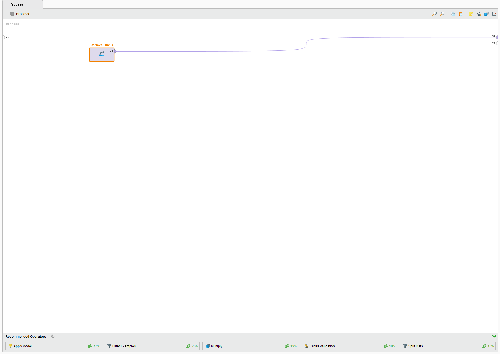
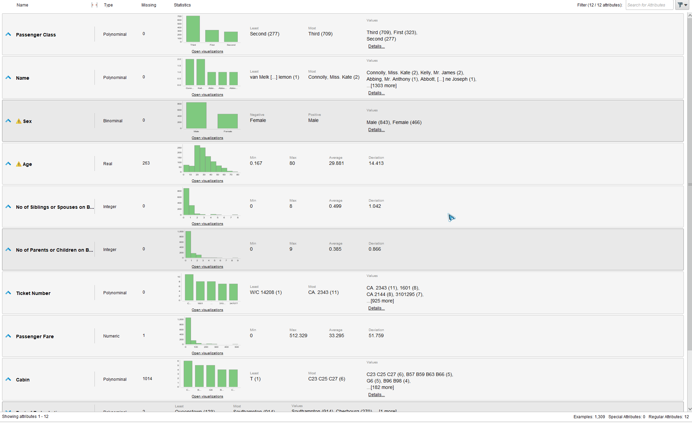
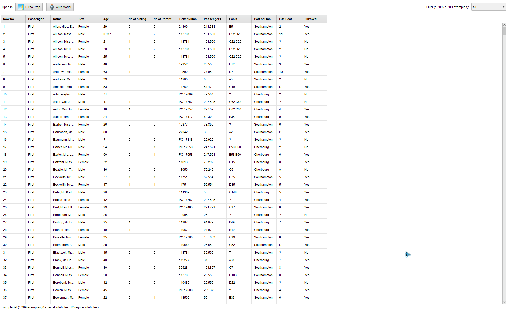
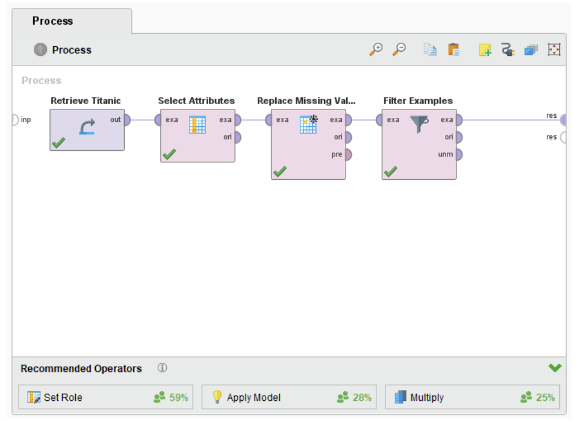

The Titanic dataset is a well-known dataset in the field of data science and machine learning. This dataset provides information about the passengers on board the famous ship Titanic, which sank on its maiden voyage in 1912 after colliding with an iceberg. The Titanic dataset is widely used for data analysis, predictive modeling, and machine learning tasks due to its simplicity and the variety of interesting questions it can address.
OBJECTIVE
The objective of the Titanic dataset can vary depending on the specific analysis or machine learning
task being performed. Generally, the main objectives of working with the Titanic dataset include:
Survival Prediction: One common objective is to build predictive models that
can determine the likelihood of a passenger surviving the sinking of the Titanic based on their
characteristics and other information. This is typically framed as a binary classification problem
where the goal is to predict whether a passenger survived (1) or did not survive (0).
Data Exploration and Analysis: Another objective is to explore and analyze the dataset
to gain insights into the demographics and characteristics of the passengers. This can involve identifying
patterns, trends, and correlations among various features, such as the relationship between passenger
class and survival rates, the impact of age and gender on survival, etc.

DATA INSPECTION
Firstly, we need to understand what we are dealing with. Data types, ranges, averages, deviations, and distributions. Running the Retrieve operator alone results in the unmodified dataset as an output, ideal to inspect the content of the dataset.
 Just by visualizing the dataset, we know there are 1309 examples total. The Cabin attribute alone has 1014 values missing, almost 78% of the data examples. Other attribute also present missing values, such as Age with 263, Life Boat with 823, Passenger Fare with 1, etc. This values need to be handle before training any model.
ATTRIBUTE SELECTION AND EXAMPLES FILTERING
Attributes Cabin and Life Boat present more than 50% of missing examples. This implies that the information given by this attribute can cause serius bias in the model, if used like this or with artificial data. Because of this, the better option is to completly vanish the attribute before training. This can be done with the Select Attributes Rapid Miner operator, selecting the subset of attributes to ignore.
Age attribute presents a lot of missing values too, but not in a significant way as the attributes discused before. Further, this time we need to handle a numeric attribute. 263 examples are still a lot to delete, but we can impute the average value of ages. This way we mantain the examples for Further use. This can be done with the Replace Missing Values operator, setted with average imputation.
We still have some examples to deal with. Yet, the attributes they lack have only 1 or 2 total missing values, which is an acceptable value considering the context. Given the fact that the dataset has about 1300 examples, filtering some of them won't cause any noticable changes. With the Filter Examples operator we can get rid of the remaining missing values. The resultant chain of RapidMiner operators is now presented.
CONCLUSIONS
After this manipulation, every classification algorithm can be used to predict the target variable. Some extra step may be to apply data transformations (depending on the chosen algorithm) and some Feature Selection techniques to lower the dimensions of the problem, but we still obtained a decent dataset to work with.